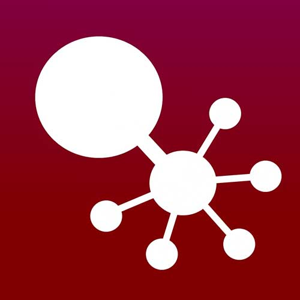

Introducción:
Según la investigación de Microsoft "Closing The STEM Gap” hecha en 2017, encontró varios puntos por los cuales las mujeres deciden alejarse de las ciencias: Las mujeres pierden el interés por carreras relacionadas con las CTIM cuando crecen, por ejemplo, al 31% de las niñas de escuela primaria encuestadas les atrae la programación, pero al momento que ingresan a la universidad el porcentaje desciende a casi el 20%.
Con esto en menten decidimos crear una plataforma pensando en atraer más mujeres al mundo de las CTIM. Para esto realizamos encuentas on-line con 100 personas y con los insights que sacamos fue que empezamos a hacer los primeros prototipos de la interfaz de este proyecto.
Cliente:
Este fue un trabajo realizado en el bootcamp intensivo con especialización en UX, Laboratoria.
El Equipo:
Front end, UX Research y UI Designer: Linda Tableros Gessner.
Front end: Luz Adriana Herrera.
Mi papel:
UX Research, UI Designer y Front end.
Mi contribución:
A continuación hablaré
Acciones:
Proceso
Benchmark
Para poder diseñar una red social que satisfaga a las usuarias al máximo se analizaron productos similares y se compararon en base a sus procesos y funcionalidades.

User Persona
Mockups de baja fidelidad
Mockups de alta fidelidad
Prototipos de alta fidelidad
Para nuestro proceso de maquetado decidimos usar la plataforma digital "Canva". Esta maqueta es el reflejo de los datos obtenidos en las encuestas, por ejemplo, la paleta de colores y el hacer un diseño sencillo e intuitivo donde fueran pocos botones, pero con funcionalidad clara.